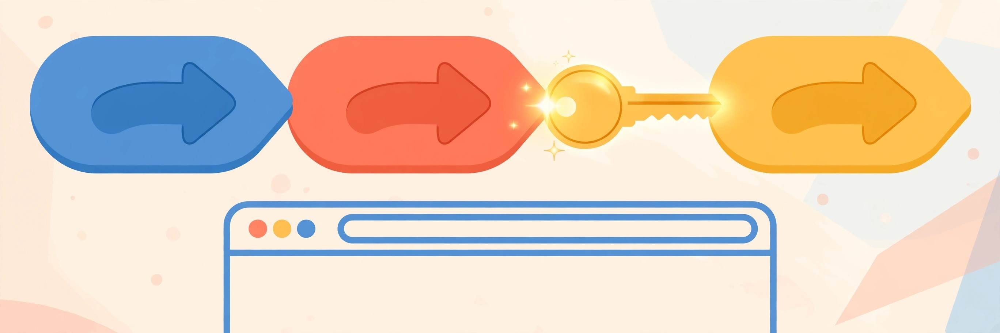

Referral Link Redirects and Shorteners: What Each Hop Does to Tracking

Does shortening a referral link break its tracking? The short answer: a redirect, by itself, does not. What breaks tracking is specific and checkable. The destination URL loses the parameters that identify you, the landing page lacks the snippet that records the click, or the program’s terms classify your redirect as manipulation rather than shortening. Everything else, including the popular argument about which status code to pick, matters less than shortener guides claim. The evidence, in order.
What a redirect actually is, in spec terms
MDN’s HTTP redirection guide, the reference this article checks vendor advice against, defines the mechanism plainly. A server answers a request with a status code in the 3xx range and a Location header holding the URL to load next. The browser loads that URL immediately. Two costs are built in: an extra round trip on every hop, and a performance impact that grows with each redirect added, which is why the guide advises keeping redirects to a minimum. A referral link that passes through a shortener, then a tracking platform, then the vendor has already spent three hops before the page starts loading.
The guide also settles the order of methods. HTTP redirects execute first, before any page exists. JavaScript redirects, set through window.location, execute next. Meta refresh redirects execute last, after the page has completely loaded. When server control is available, the guide’s advice is to use HTTP redirects. For a referral link, that ranking has a practical edge: a meta refresh page is an extra page that must load, render, and fire before the visitor moves on, and anything that interrupts that page interrupts the hop.
The status codes, checked against the spec
Shortener guides typically recommend 301 for stable links and 302 for promotions that might be reverted. Digistore24’s cloaking guide states exactly that pairing, and adds that its platform reads the cookie stored at the moment of the first click to attribute later purchases. The recommendation is workable, but the reasoning usually offered for it is habit, not specification. Here is what the codes actually guarantee, from the MDN table:
| Code | Class | Method handling | What crawlers do |
|---|---|---|---|
| 301 | Permanent | GET unchanged; other methods may or may not change to GET | Update to the new URL and stop using the old one |
| 308 | Permanent | Method and body not changed | Update to the new URL |
| 302 | Temporary | GET unchanged; other methods may or may not change to GET | Do not memorise the new URL |
| 303 | Temporary | Other methods changed to GET, body lost | Do not memorise the new URL |
| 307 | Temporary | Method and body not changed | Do not memorise the new URL |
For a referral click, which is a GET request, every code in the table carries the visitor and the full destination URL, parameters included, to the same place. The differences that matter are the two in the last columns. A permanent code tells crawlers and browsers that the short address is settled, which is the wrong signal for a destination you intend to swap during a promotion. A temporary code keeps the short address authoritative. Method handling, the distinction the 307 and 308 codes exist to protect, is real and irrelevant here: there is no request body in a link click for a redirect to preserve or lose. Choose the code by permanence, not by folklore.
Where tracking actually breaks
PartnerStack’s troubleshooting documentation names the failure points, and none of them is a status code. First, the expanded destination URL must still carry the identifying parameters: the documentation’s test is to follow the partner link in an incognito window and confirm the fully expanded URL includes a GSPK or ps_partner_key, the partner key, and a GSXID or ps_xid, the click ID. A shortener that rebuilds the destination and drops the query string fails this test completely, whatever code it returns. Second, where the integration uses the platform’s JavaScript snippet, the customer must land on a page that carries the snippet. No snippet on the destination page means no customer capture, so a redirect to a deep page the program never instrumented loses the referral at the last hop. Third, the click places a cookie in the visitor’s browser, and a sign-up completed in a different browser or on a different device does not track. That failure has nothing to do with your redirect at all, and no choice of shortener fixes it.
Where shortening ends and manipulation begins
The technical answer is incomplete without the contractual one, because a redirect can track perfectly and still breach the program’s terms. Descript’s affiliate terms, in this site’s directory, draw the line in three clauses that deserve to be read together. Affiliates must use the unique URL obtained from the affiliate interface without manipulation. The same section expressly permits shortening that URL through URL shortener services. And a separate clause prohibits direct linking to the company’s website from any online ad, or using redirects that yield the same result, which the terms name URL hijacking; affiliates must send ad traffic to an actual page of their own first.
Put together, the pattern is consistent. Shortening is allowed because it changes how the link looks, not where the click is recorded or who appears to have sent it. Manipulation begins where the redirect changes the substance: a different destination than the issued link intends, an ad click dressed up as a content click, or a hop inserted to intercept traffic meant for someone else. The test is not whether a redirect exists. It is whether the program, reading its own terms, would call the result the same link it issued.
Verify the hop before you share the link
- Copy the issued link exactly. Start from the affiliate interface URL, unmodified. Any shortening is applied to that string, never to a rebuilt version of it.
- Create the short link and open it in a private window. Private mode removes your own cookies and extensions from the test, so what you observe is the hop a stranger’s browser makes.
- Read the fully expanded destination URL. Confirm the partner key and click ID parameters are present in the final address, using the platform’s own parameter names where it publishes them. Missing parameters mean the shortener rebuilt the URL; change the setting or the tool.
- Confirm the landing page is an instrumented one. Use the program’s default destination unless the program confirms the deep page carries its tracking. A prettier landing page that lacks the snippet earns nothing.
- Check the redirect class matches your intent. Temporary for destinations you may swap, permanent only for addresses you are committing to. One hop where one will do; every extra redirect is latency a share of visitors will not wait through.
- Read the program’s link clauses before the first paid placement. Shortening permission, manipulation wording, and any rule about ads and redirects, in the terms, not in a forum summary.
What success looks like: the private window test lands on the intended page, the expanded URL carries both identifying parameters, and the dashboard records the click against your account. At that point the redirect is verified as a hop, not trusted as one.
Important: no income guarantees
This article is general information, not financial or tax advice. Referral and affiliate rewards are never guaranteed income, and a verified redirect cannot promise that a referral will be recorded or credited. Specification details and program terms described here were checked against the named sources in November 2026 and can change; confirm current terms on the official program page. Report any income you do receive as your local tax rules require.
, Dex Carter, Tech Writer